Vôi Hóa Màng Phổi
I. Đại cương
– Vôi hóa màng phổi (pleural calcification) là sự lắng đọng muối calci trong màng phổi, tạo các mảng hoặc dải tăng đậm độ chạy dọc theo bề mặt màng phổi trên hình ảnh.
– Cơ chế bệnh sinh: Vôi hóa màng phổi chủ yếu do lắng đọng calci loạn dưỡng trong màng phổi bị tổn thương và xơ hóa sau viêm mạn, nhiễm trùng hoặc xuất huyết; thường xảy ra khi nồng độ calci huyết bình thường.
– Nguyên nhân:
+ Mảng màng phổi liên quan amiăng, thường gặp sau phơi nhiễm nghề nghiệp hoặc môi trường như khai thác, chế biến amiăng và sử dụng vật liệu chứa amiăng trong xây dựng, đóng tàu hoặc sản xuất sợi amiăng. Tần suất và mức độ tổn thương liên quan đến mức phơi nhiễm tích lũy; tổn thương thường xuất hiện sau thời gian tiềm tàng dài, thường từ 20 năm trở lên.
+ Tràn máu màng phổi tồn dư có thể tổ chức hóa, gây xơ hóa và vôi hóa màng phổi.
+ Viêm mủ màng phổi và lao màng phổi có thể gây dày, xơ hóa và vôi hóa màng phổi sau viêm.
+ Chấn thương hoặc phẫu thuật lồng ngực có thể gây xơ hóa, dày dính và vôi hóa khu trú; gây dính màng phổi bằng talc cũng có thể tạo các đám đậm độ cao dọc màng phổi.
+ Xạ trị có thể gây tổn thương xơ hóa màng phổi; vôi hóa thứ phát ít gặp.
– Cạm bẫy khi quy nguyên nhân:
+ Không quy mọi vôi hóa màng phổi cho amiăng; cần khai thác tiền sử phơi nhiễm, lao, nhiễm trùng, tràn máu màng phổi, chấn thương, phẫu thuật, gây dính màng phổi và xạ trị.
+ Vôi hóa khu trú một bên thường gợi ý nguyên nhân tại chỗ như lao, viêm mủ, tràn máu hoặc chấn thương cũ; mảng vôi hóa hai bên làm tăng khả năng phơi nhiễm amiăng nhưng không tự xác lập tiền sử phơi nhiễm.
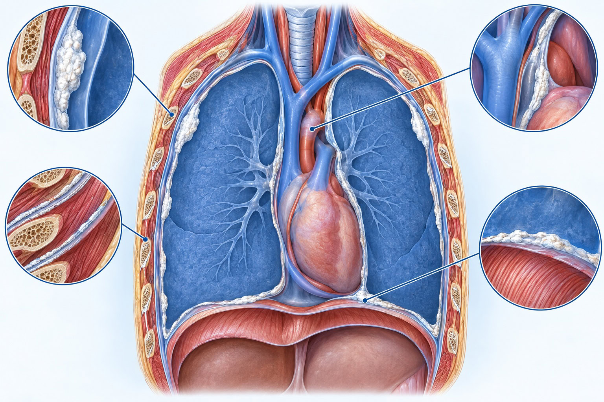
© Chẩn Đoán Hình Ảnh Xray.vn
II. Chẩn đoán hình ảnh
1. Chẩn đoán x-quang
* Mảng màng phổi
– Mảng màng phổi (pleural plaque) là vùng xơ hóa khu trú của màng phổi thành, thường liên quan phơi nhiễm amiăng và hiếm khi xuất phát từ màng phổi tạng:
+ Thường gặp ở màng phổi thành bên, trước-sau và cơ hoành; có thể gặp ở màng phổi trung thất.
+ Phân bố thường hai bên nhưng không đối xứng; góc sườn hoành và đỉnh phổi thường được bảo tồn. Dày góc sườn hoành gợi ý dày màng phổi lan tỏa hơn là mảng màng phổi.
+ Trên phim thẳng, mảng vôi hóa hiện thành đám mờ đậm, bờ rõ, áp sát thành ngực hoặc cơ hoành. Mảng không vôi hóa cũng có thể thấy nếu đủ dày, nhưng thường khó nhận diện hơn.
+ Khi nhìn chính diện, mảng có thể tạo hình bầu dục hoặc dạng đám; khi nhìn tiếp tuyến, có thể thấy dải mờ mảnh theo đường viền màng phổi. Vôi hóa làm tổn thương dễ nhận biết hơn.
– Cạm bẫy thực hành trên X-quang quy ước:
+ Mảng không vôi hóa thường khó nhận diện trên X-quang, nhất là ở màng phổi trước và trung thất do chồng hình với xương ức và tim.
+ Vôi hóa màng phổi dạng đường có thể nhầm với vôi hóa sụn sườn, phản ứng màng xương sườn hoặc nốt phổi ngoại vi. Định khu theo sụn sườn hay xương sườn, hoặc xác định tổn thương nằm trong nhu mô, giúp phân biệt.
+ Dấu hiệu chìa khóa là đối chiếu phim thẳng và nghiêng, xác định dải vôi hóa bám theo bề mặt màng phổi; không bắt buộc phải thấy rõ dày mô mềm đi kèm.
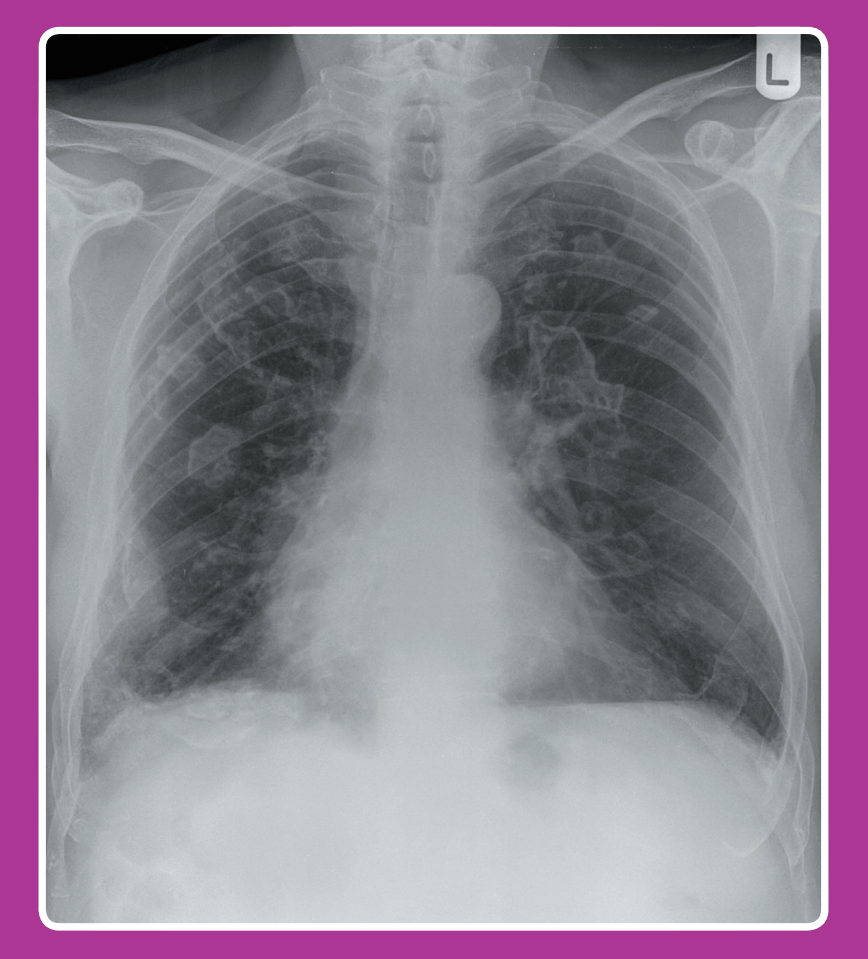
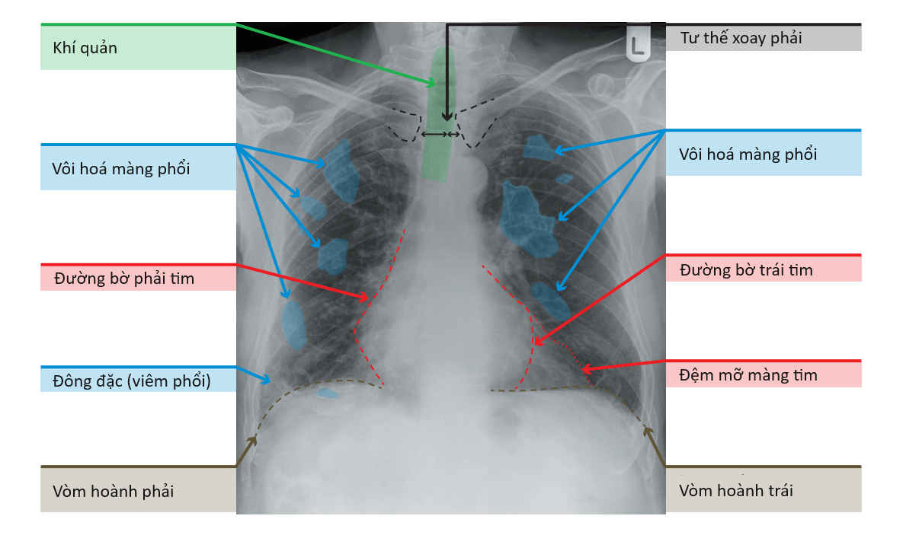
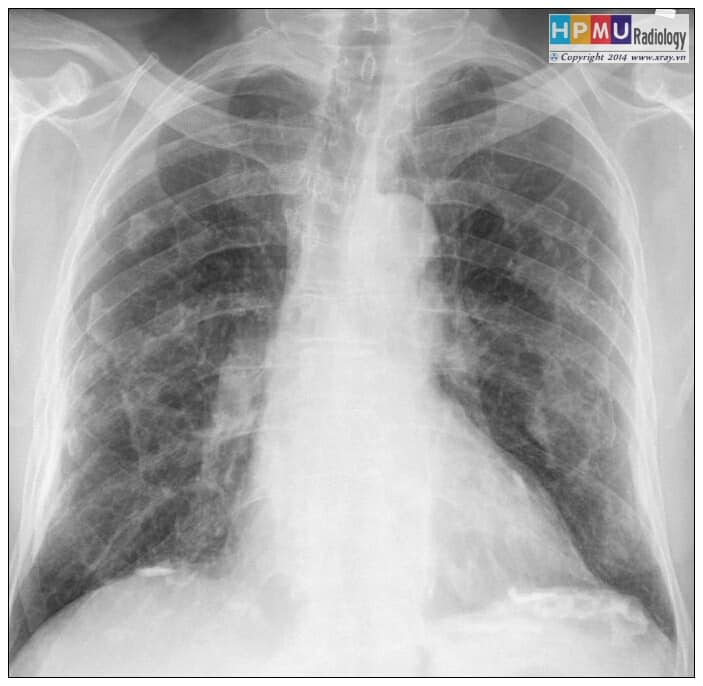
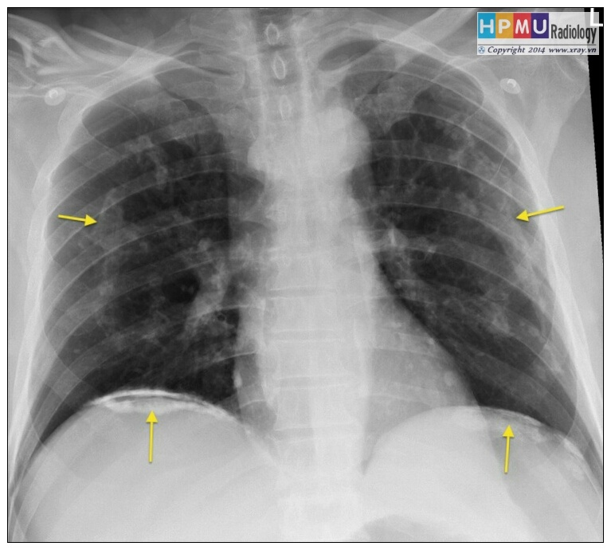
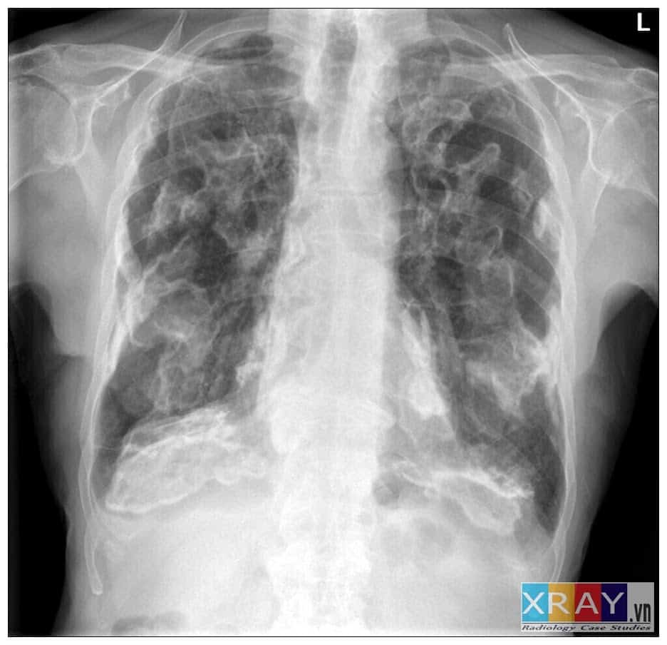
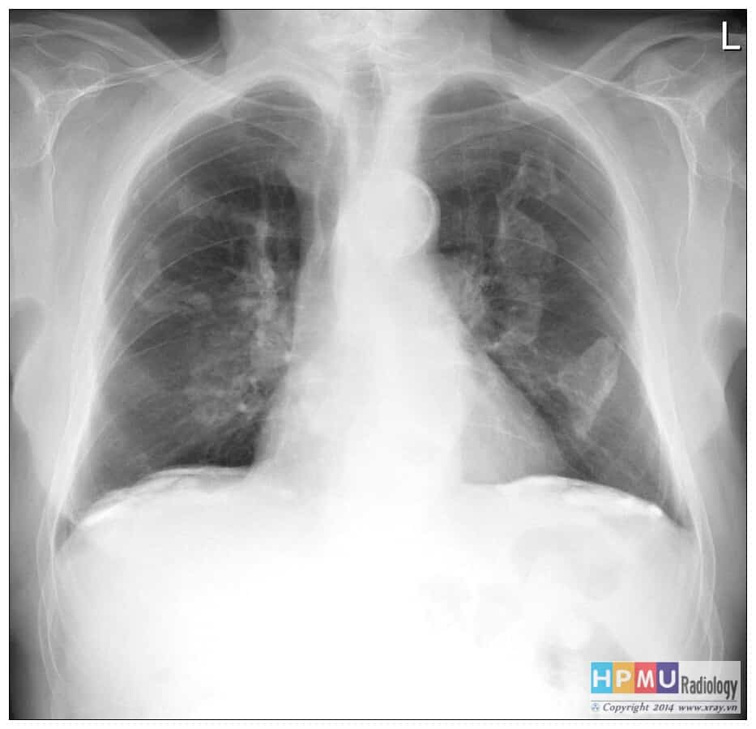
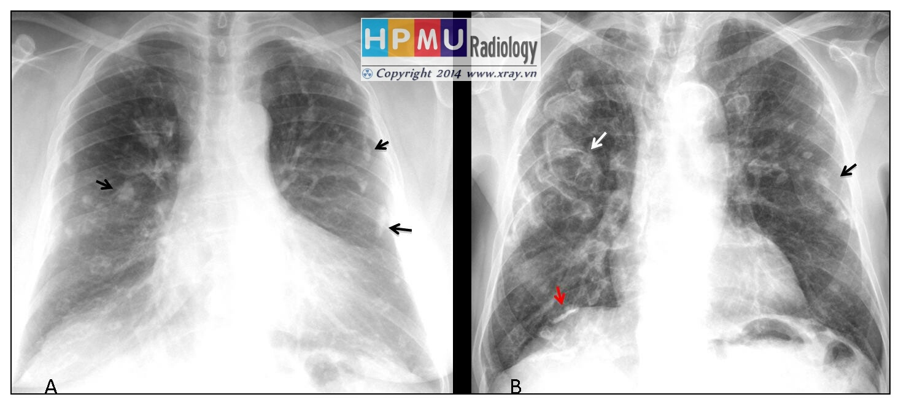
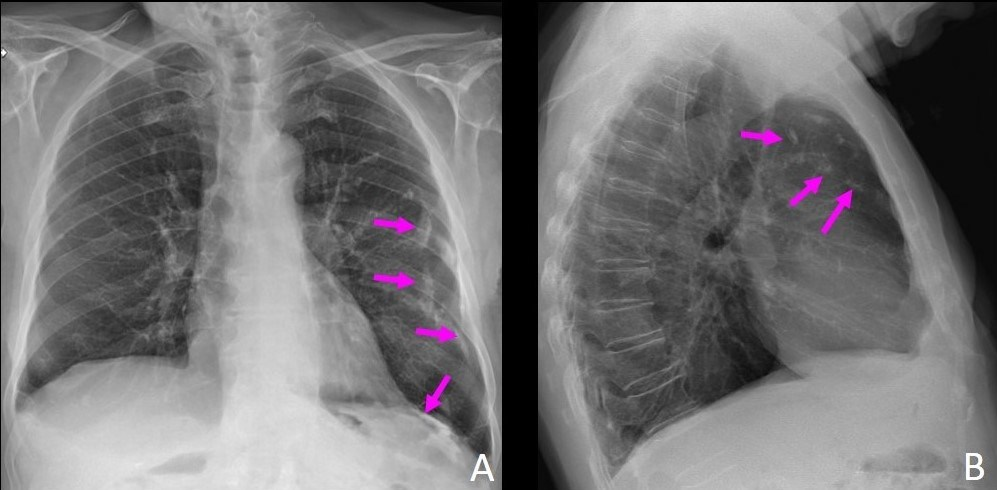
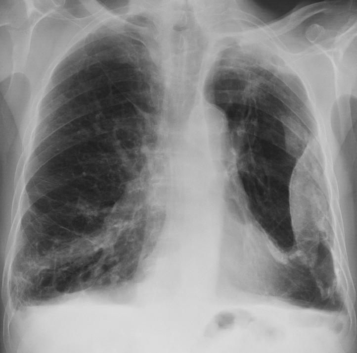
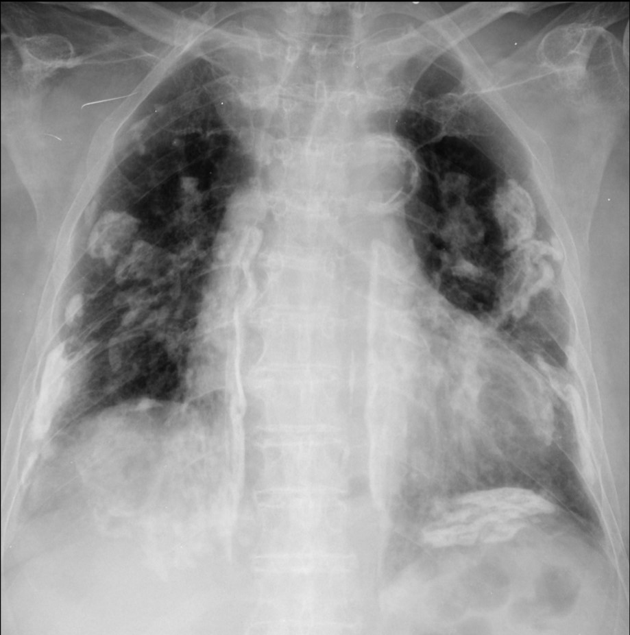
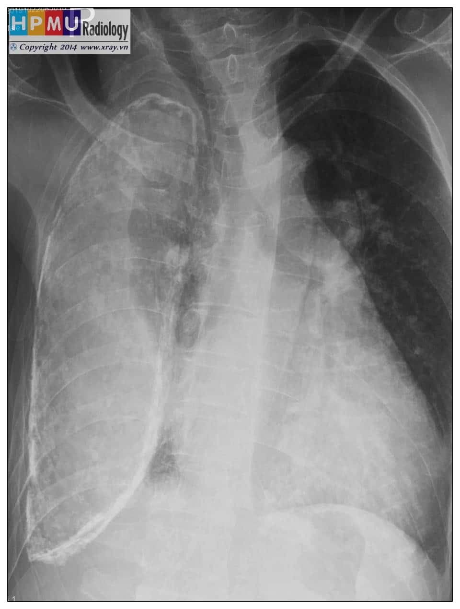
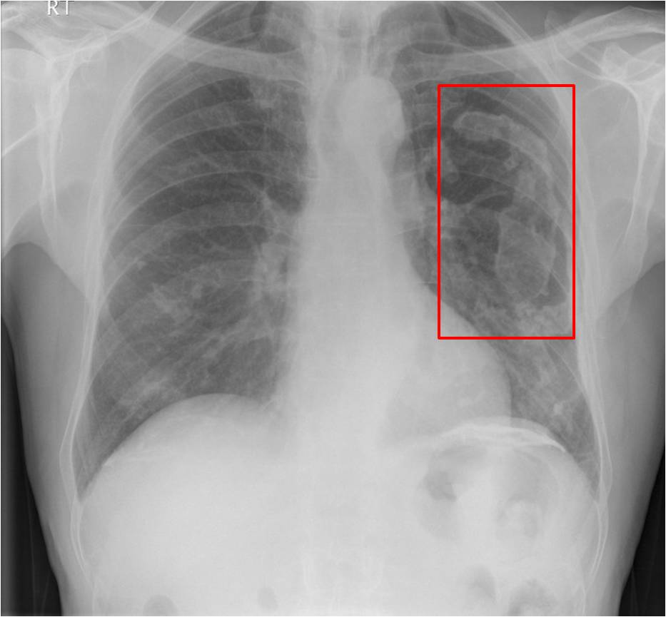
– Đặc điểm vôi hóa trên phim tiếp tuyến: Vôi hóa loạn dưỡng lắng đọng trong mô màng phổi xơ hóa, thường là di chứng của tổn thương cũ. Khi chùm tia X tiếp tuyến với tổn thương, mảng vôi hóa hiện thành dải mờ đậm, mảnh, chạy dọc màng phổi thành; có thể thấy ở thành ngực, màng phổi trung thất hoặc cơ hoành. Tổn thương nằm ngoài nhu mô phổi, không làm gián đoạn cấu trúc phế quản-mạch máu.
=> Case lâm sàng 1:
=> Case lâm sàng 2:
* Vôi hóa lan tỏa (diffuse pleural calcification)
– Thường là di chứng của viêm màng phổi mạn, nhất là lao, viêm mủ hoặc tràn máu màng phổi đã tổ chức hóa:
– Trên phim, thấy dải hoặc đám vôi hóa dày, bờ không đều, liên tục hoặc loang lổ, áp theo bề mặt màng phổi; tổn thương có thể lan tới màng phổi cơ hoành và góc sườn hoành, đôi khi bao quanh một phần hoặc phần lớn phổi.
– Thường ở một bên, có thể kèm dày xơ màng phổi và giảm thể tích lồng ngực cùng bên; đôi khi có co cụm xương sườn hoặc nâng vòm hoành.
– So với mảng màng phổi liên quan amiăng thường khu trú thành nhiều đám, phân bố hai bên không đối xứng và bảo tồn góc sườn hoành, dạng lan tỏa thường liên tục hơn, có thể lan tới góc sườn hoành và gây giảm thể tích phổi. Các kiểu hình có thể chồng lấp, cần đối chiếu tiền sử.
* Vôi hóa sau tổn thương cũ (localized pleural calcification)
– Thường là đám hoặc dải vôi hóa không đều, bám theo vùng màng phổi từng bị tổn thương:
– Có thể gặp sau tràn máu màng phổi, viêm mủ, lao, chấn thương hoặc phẫu thuật; thường khu trú một bên và đi kèm dày màng phổi tại chỗ.
– Cạm bẫy: Lắng đọng talc sau gây dính màng phổi có thể tạo đám đậm độ cao dọc màng phổi nhưng không đồng nghĩa với vôi hóa; cần đối chiếu tiền sử thủ thuật.


2. Chẩn đoán CLVT
– Vai trò và kỹ thuật CLVT đa dãy (MDCT) trong đánh giá vôi hóa màng phổi:
+ CLVT nhạy hơn X-quang quy ước trong phát hiện mảng màng phổi, kể cả mảng mỏng, chưa vôi hóa hoặc có vôi hóa nhỏ.
+ Nên sử dụng lát cắt mỏng khoảng 1–1,5 mm và tái tạo đa mặt phẳng; đọc trên cửa sổ trung thất và cửa sổ xương, bổ sung cửa sổ phổi để đánh giá nhu mô kế cận. Thông số cửa sổ được điều chỉnh theo máy và mục tiêu đọc.
+ Tái tạo đa mặt phẳng giúp xác định tổn thương bám theo màng phổi thành, trung thất hay cơ hoành, đồng thời đánh giá phạm vi và các biến đổi lân cận.
– Đặc điểm đậm độ trên CLVT:
+ Mảng chưa vôi hóa thường có đậm độ mô mềm; khi có vôi hóa, các ổ tăng đậm độ nổi bật hơn trên cửa sổ xương.
+ Giá trị HU phụ thuộc thông số chụp và tái tạo, độ dày lát cắt, kích thước ROI và hiệu ứng thể tích riêng phần; không nên dùng một ngưỡng HU đơn độc làm tiêu chuẩn phổ quát để xác định vôi hóa màng phổi.
– Hình thái và phân bố vôi hóa trên CLVT:
+ Vôi hóa có thể dạng mảng, đường hoặc nốt, bám theo màng phổi thành ngực, màng phổi trung thất hoặc cơ hoành.
+ Vôi hóa hai bên, phân bố không đối xứng làm tăng khả năng bệnh màng phổi liên quan amiăng nhưng không tự xác lập tiền sử phơi nhiễm. Vôi hóa khu trú một bên gợi ý di chứng tại chỗ như lao, viêm mủ, tràn máu hoặc chấn thương cũ; cần đối chiếu tiền sử.
+ Dày màng phổi lan tỏa kèm vôi hóa có thể là di chứng của viêm màng phổi mạn, lao, viêm mủ hoặc tràn máu màng phổi đã tổ chức hóa; vôi hóa thứ phát sau xạ trị ít gặp.

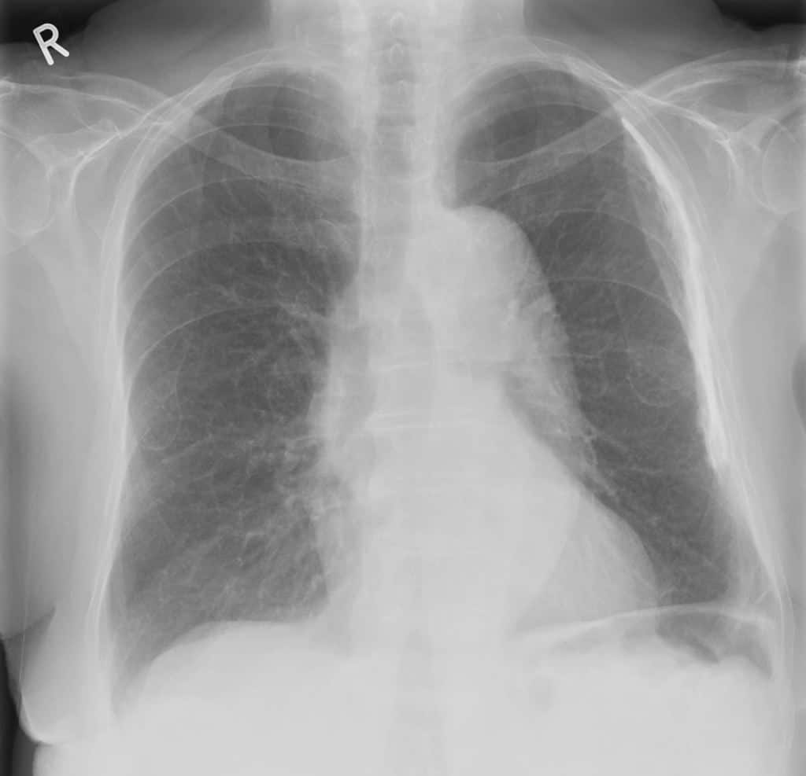

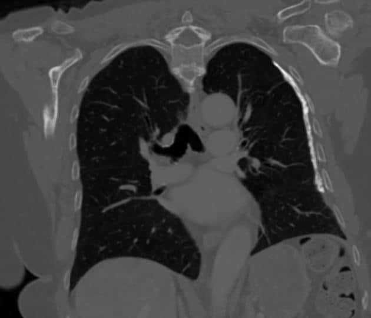

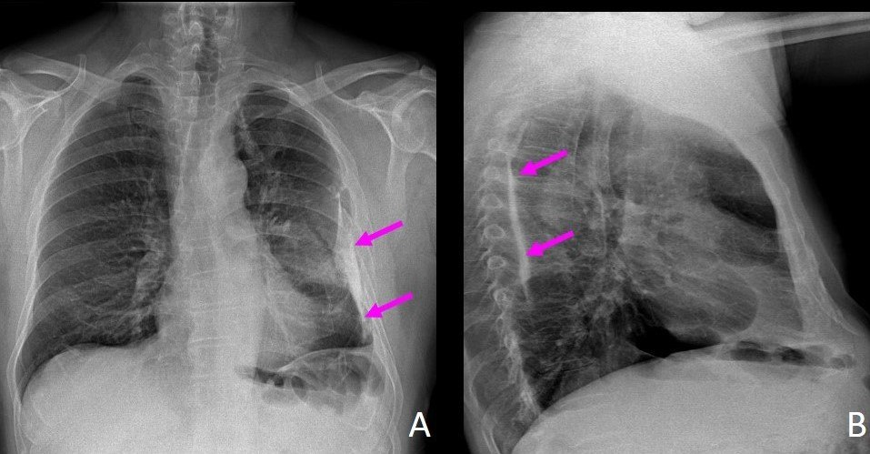

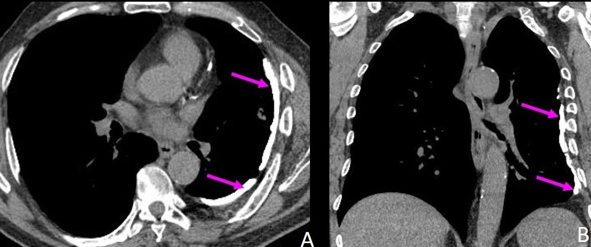

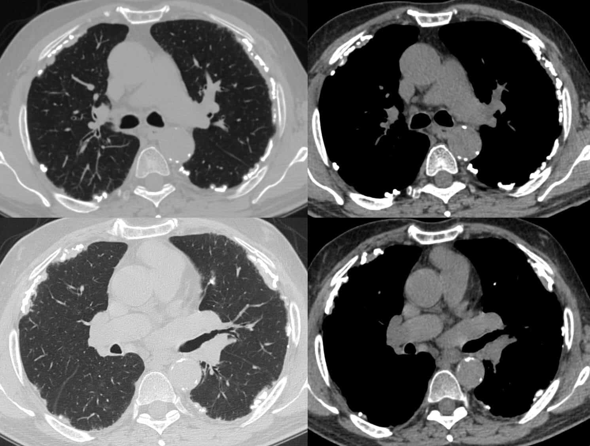

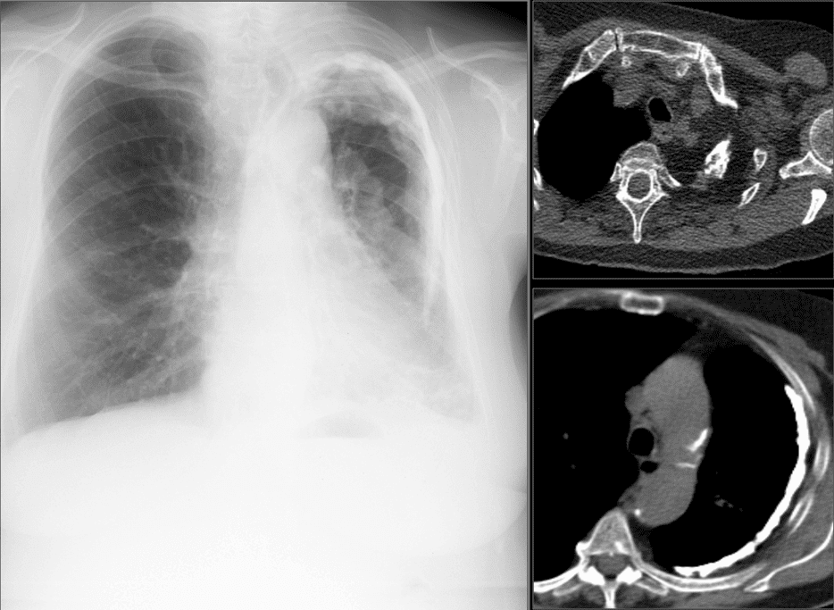

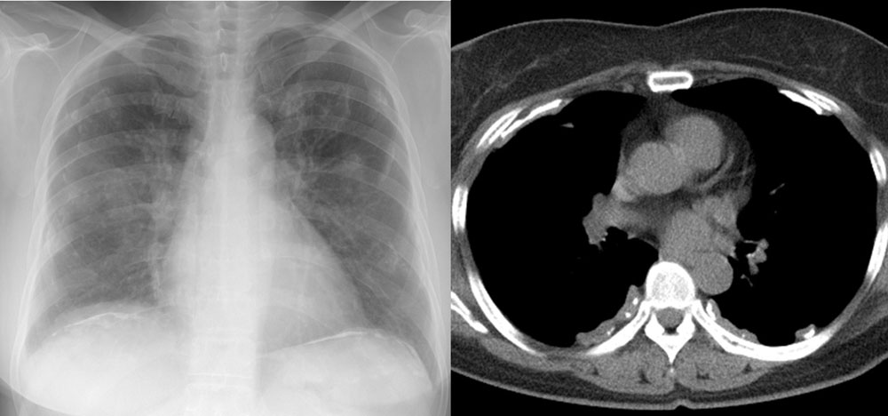

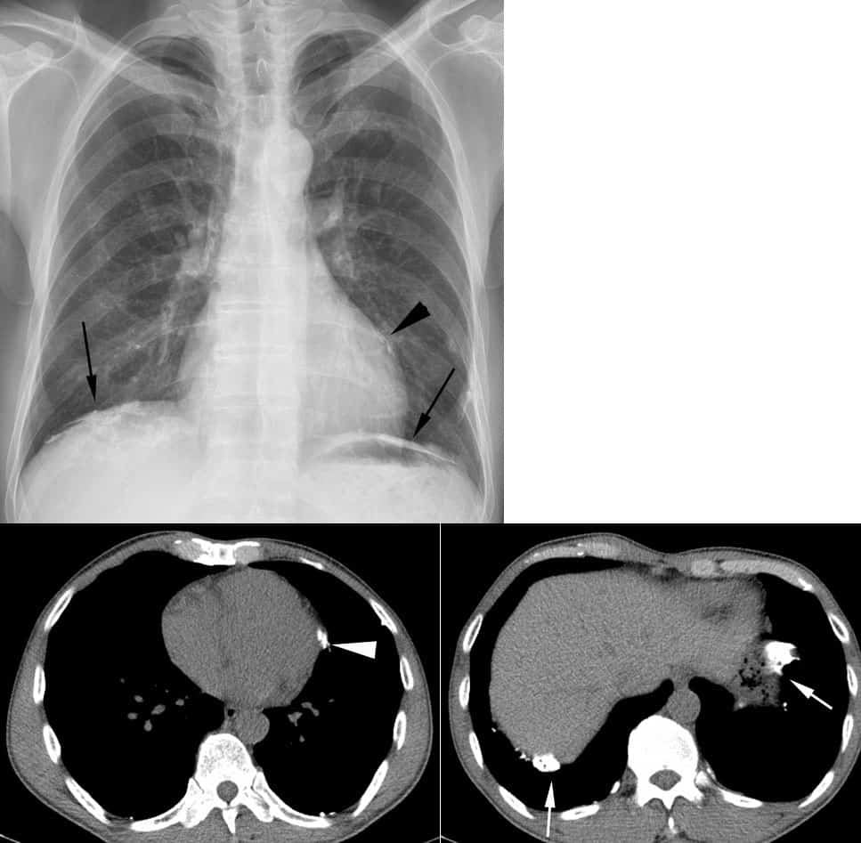

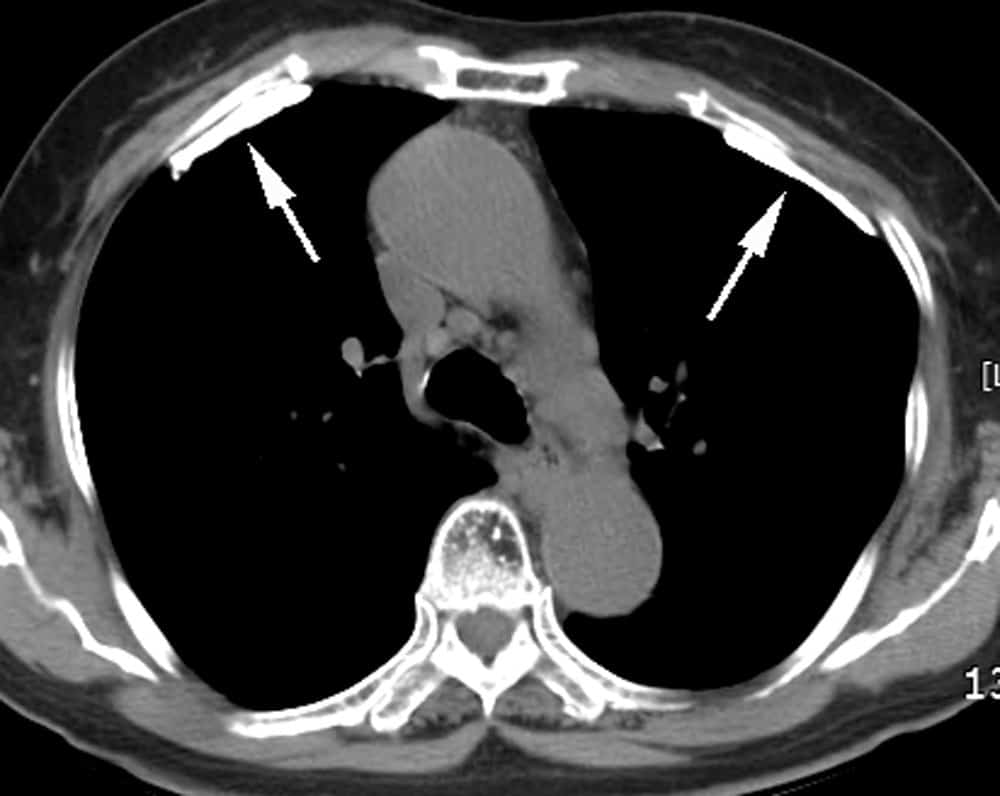

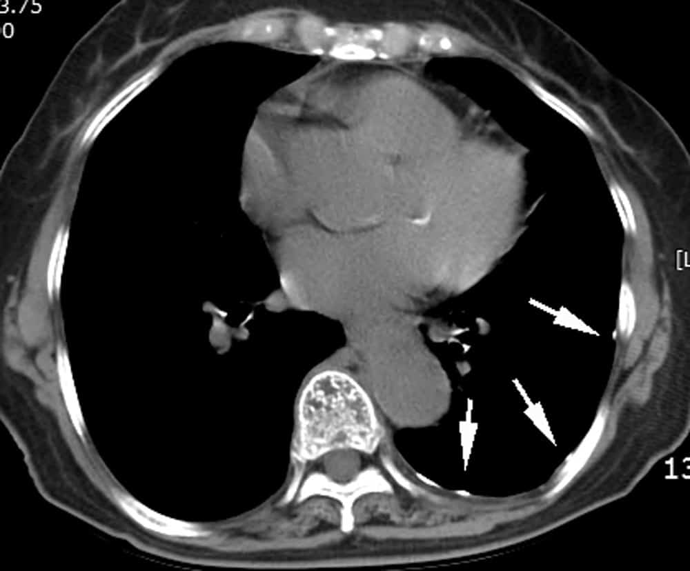

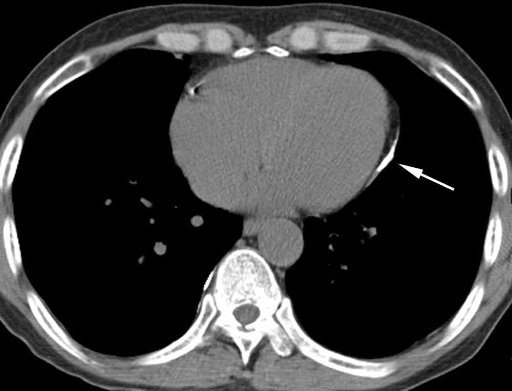

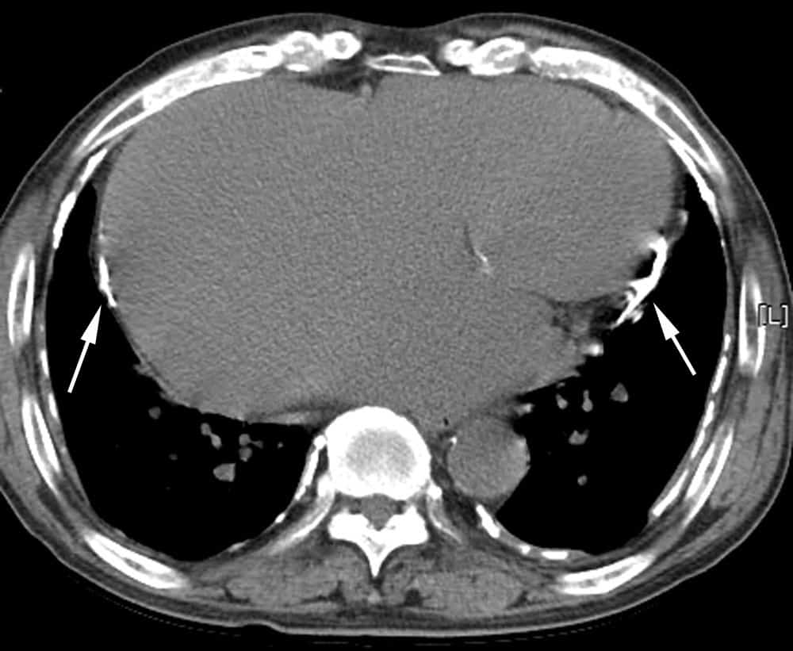

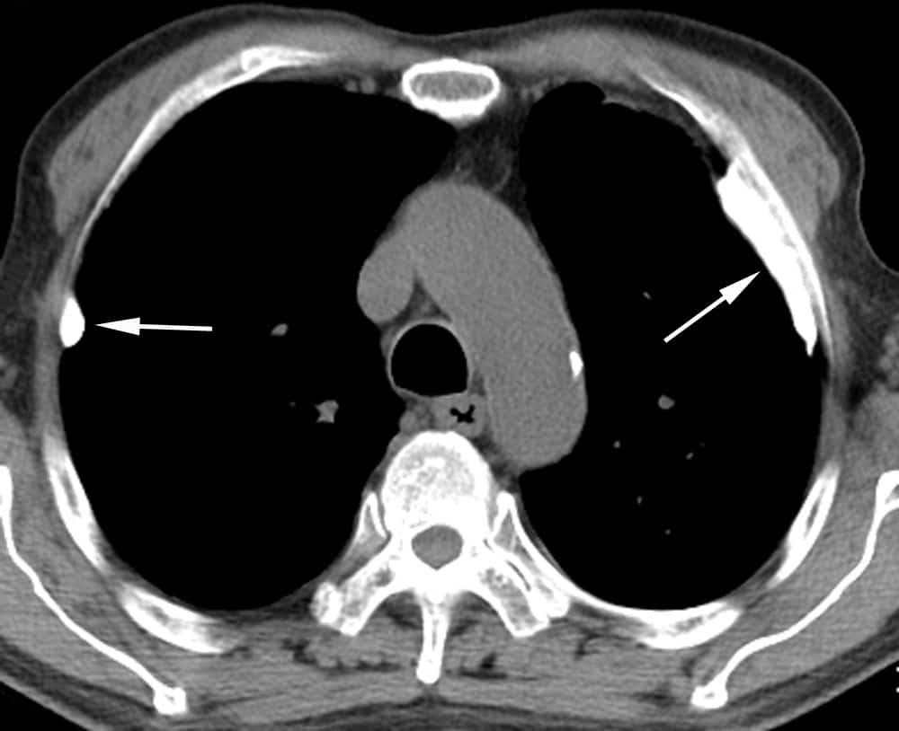
III. Tiên lượng & Điều trị
– Tiên lượng:
+ Tiên lượng phụ thuộc nguyên nhân, mức độ dày dính màng phổi, bệnh nhu mô phổi phối hợp và mức độ hạn chế chức năng hô hấp; vôi hóa đơn thuần thường là di chứng, không đồng nghĩa bệnh đang hoạt động.
+ Mảng màng phổi khu trú thường lành tính, không phải tổn thương tiền ung thư và ít ảnh hưởng chức năng hô hấp. Nếu liên quan amiăng, mảng là dấu ấn phơi nhiễm; nguy cơ bệnh liên quan amiăng cần được đánh giá theo tiền sử và các tổn thương phối hợp.
+ Dày màng phổi lan tỏa hoặc xơ ngực (fibrothorax) có thể gây phổi bị kẹt (trapped lung), giảm nở phổi và rối loạn thông khí hạn chế; khó thở và tiên lượng xấu hơn khi tổn thương rộng hoặc có bệnh nhu mô phổi kèm theo.
– Điều trị:
+ Không có điều trị nội khoa làm tan vôi hóa; mảng màng phổi đơn thuần, không triệu chứng không cần can thiệp để loại bỏ mảng.
+ Điều trị nguyên nhân nếu còn hoạt động, như lao hoặc nhiễm trùng màng phổi, theo hướng dẫn chuyên khoa tương ứng; không điều trị kháng nhiễm trùng chỉ dựa trên hình ảnh vôi hóa di chứng.
+ Khi có khó thở hoặc giảm chức năng hô hấp, đánh giá lâm sàng và chức năng hô hấp, đồng thời xử trí bệnh phổi phối hợp và các yếu tố làm nặng.
+ Bóc vỏ màng phổi (decortication) chỉ cân nhắc ở người bệnh được chọn lọc, có fibrothorax/phổi bị kẹt gây triệu chứng hoặc hạn chế chức năng đáng kể và nhu mô phổi còn khả năng nở; cần hội chẩn hô hấp–phẫu thuật lồng ngực, cân nhắc lợi ích và nguy cơ. Không chỉ định chỉ vì có mảng vôi hóa hoặc hình ảnh vôi hóa lan rộng.
– Theo dõi:
+ Với mảng màng phổi đơn thuần, không triệu chứng và không có tổn thương liên quan khác, thường không cần điều trị hoặc chụp định kỳ chỉ để theo dõi mảng. Đánh giá nguy cơ và tầm soát ung thư phổi theo tiêu chuẩn phơi nhiễm, hút thuốc và hướng dẫn địa phương.
+ Với dày màng phổi lan tỏa hoặc fibrothorax có triệu chứng, theo dõi triệu chứng và chức năng hô hấp; chỉ định hình ảnh theo diễn biến lâm sàng. Đánh giá lại khi xuất hiện khó thở mới hoặc tăng dần, đau ngực tiến triển, tràn dịch hay dày màng phổi tăng.
+ Tránh phơi nhiễm amiăng và tư vấn cai thuốc lá khi phù hợp.
Tài liệu tham khảo
* Pneumoconiosis: Comparison of Imaging and Pathologic Findings – Semin Chong, MD, Kyung Soo Lee, MD, Myung Jin Chung, MD
* Silicosis: Radiographic findings and the use of the International Labour Organization Classification 2011 – V. de Lara Bendahan, C. Gomez de las Heras, L. Garcia Camacho
* Silicosis: A pictorial review – M. Barral, M. Rodriguez Castilla, J. Garcia Serrano
* Silicosis: a pictorial review – R. Correia, M. S. C. Rodrigues, C. Esteves, A. F. S. Simões, M. Pimenta; Porto/PT
* Features of computed tomography and PET/CT in diagnostics of silicosis – A. Kovaleva; Moscow/RU
* HRCT findings of p-nodules in the patients with simple pneumoconiosis – Y. Kim, S. J. Kim; Chungju-si/KR, Cheongju-si, Chungbuk/KR
* Complications of Pneumoconiosis: Radiologic Overview – J. S. JUN, J. I. Jung, H. R. KIM, M. I. Ahn, D. H. Han, J. M. KO, S. H. Park; SEOUL/KR
* Asbestos exposure: anotherone bites the dust – C. E. Paradisi-Chacon, B. Madariaga
* Silicosis, radiological findings in Chest radiograph and MDCT – J. A. Guirola, V. Mayoral Campos, C. Bonnet Carron